I'm always trying to branch out and develop new creative outlets! This section contains both colored line drawings as well as some pixel art.
-
2D Digital Art
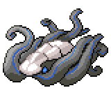The Cephalyx (Winter 2019)
-
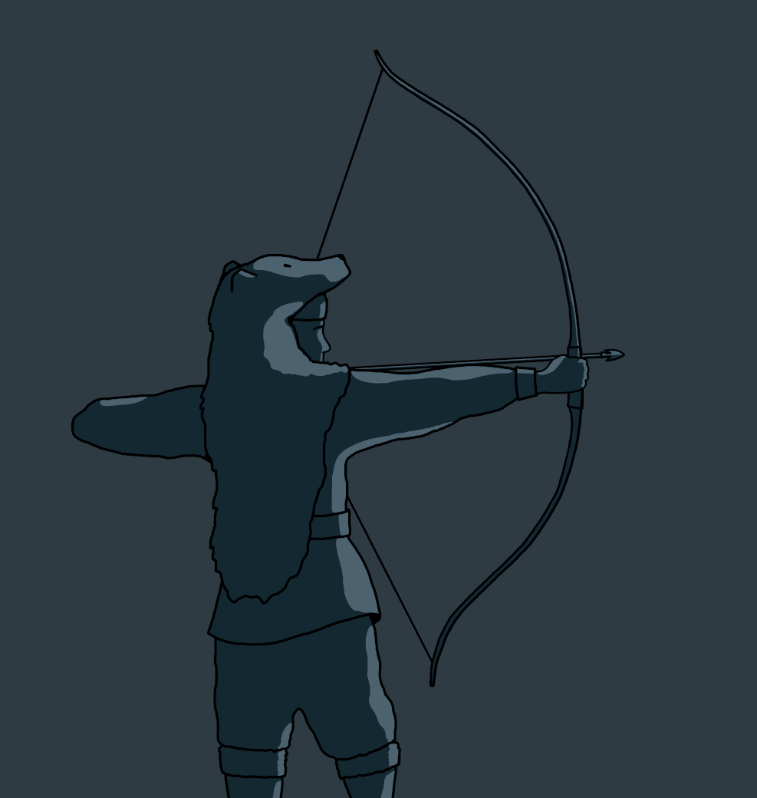
Devana, Goddess of the Hunt (Summer 2019)
In Western Slavic mythology, Devana is the goddess of nature, the moon, and the hunt. She is often depicted wearing a bear pelt.
-
- 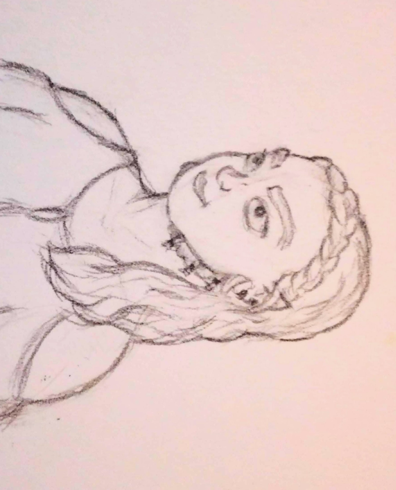
- 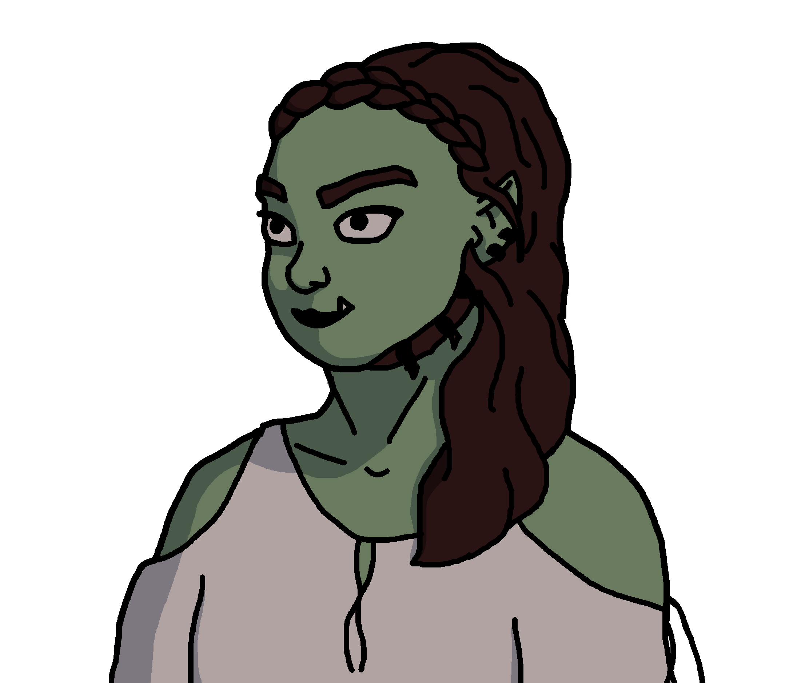
Sketch (Top) and final piece (Bottom)
Original D&D Character (Fall 2020)
I designed this character for a Dungeons and Dragons campaign my friends and I were in talks of starting.
I first drew a pencil sketch, then traced a line art layer over an image of the sketch using my computer trackpad. I added fills and simple shading on another layer.
-
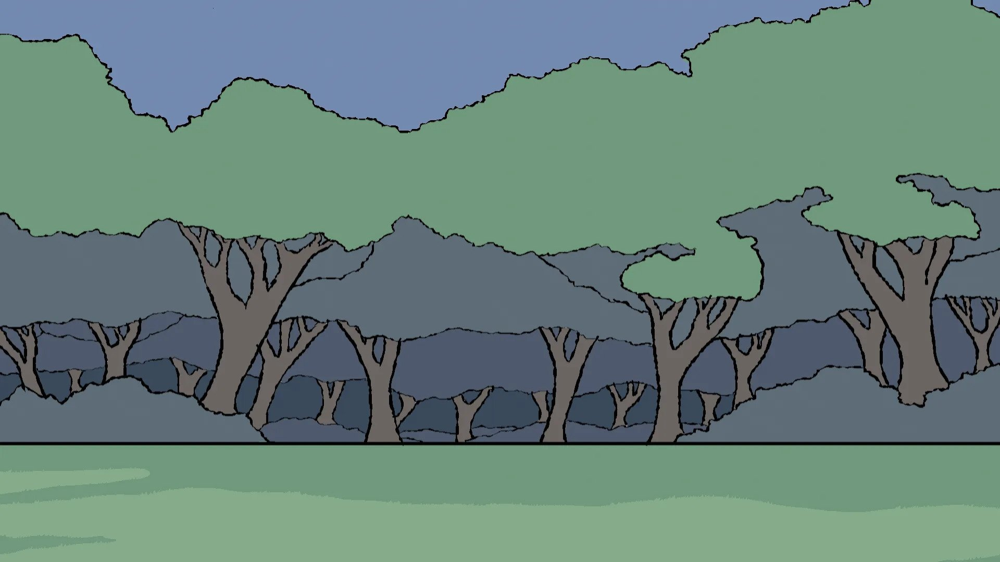
Forest Background (Spring 2021)
After buying a drawing tablet, I made this piece to test it out. My thought was that I could use it as a background plate for an animation or other piece.
-
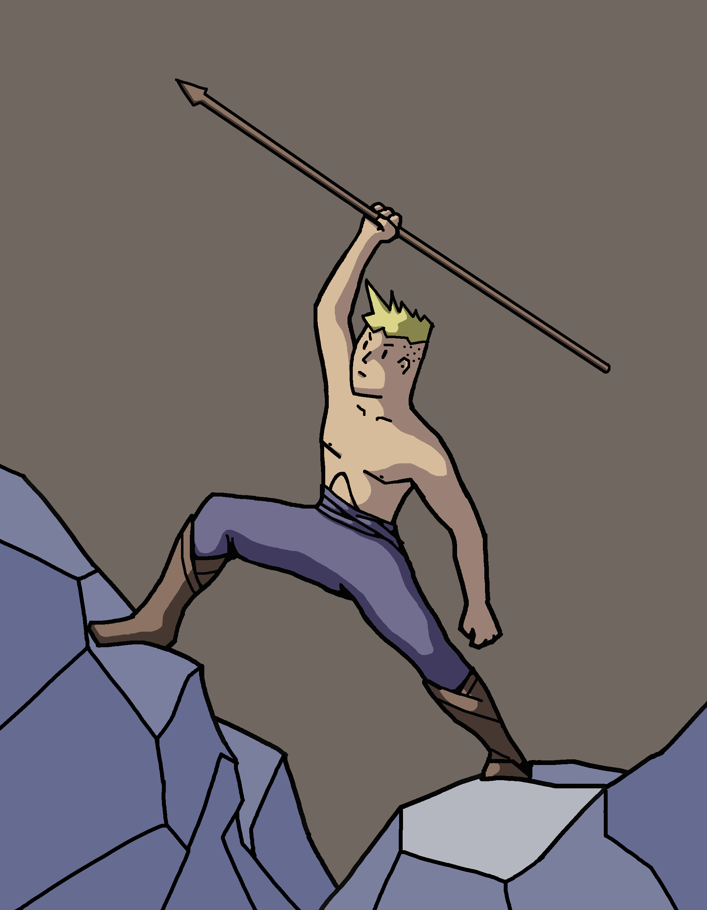
Guy with Spear (Spring 2019)
I created this as a concept piece for the protagonist of a graphic novel.
-
- 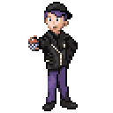
- 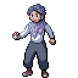
- 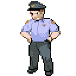
- 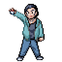
Pixel Art Characters
Growing up, Pokémon Emerald was my favorite video game. It was made for the Game Boy Advance which had a resolution of 240x160 pixels. Character sprites were confined to a 80x80px box.
I made these character sprites in the same format and style of the original game.
-
- 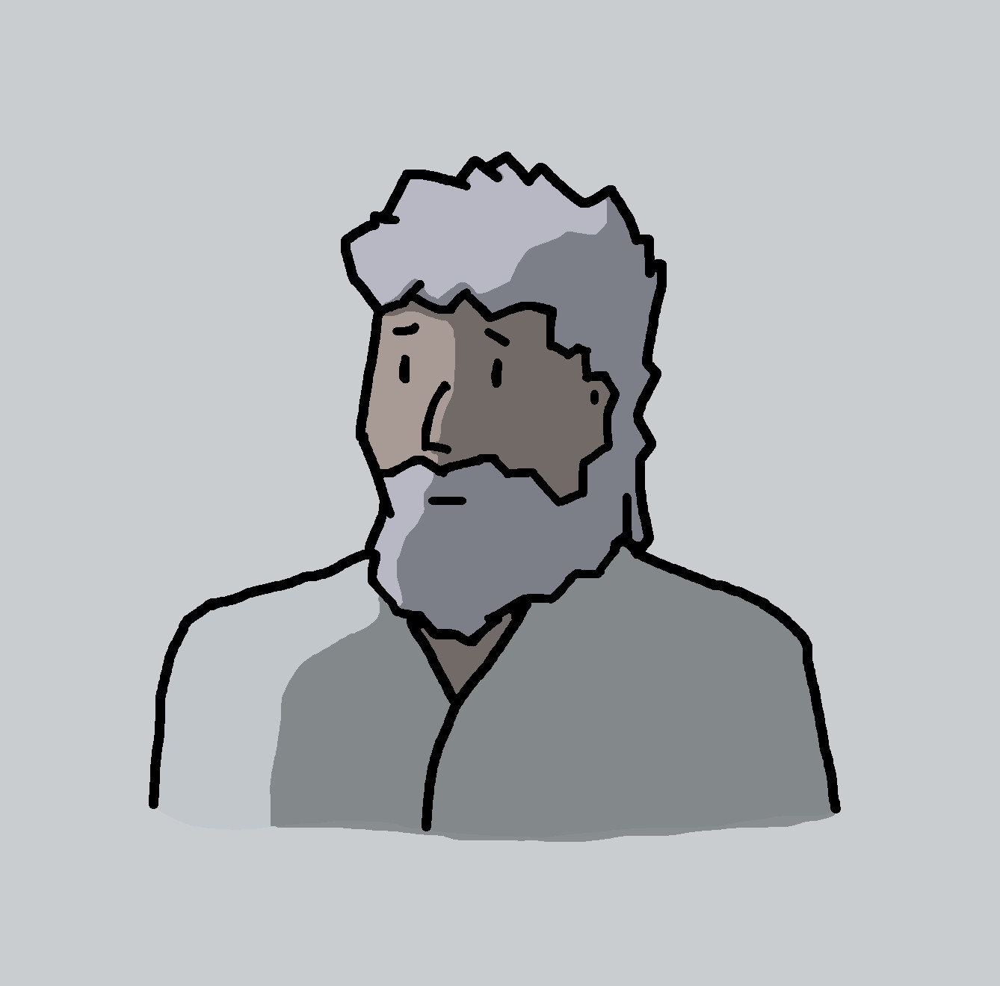
- 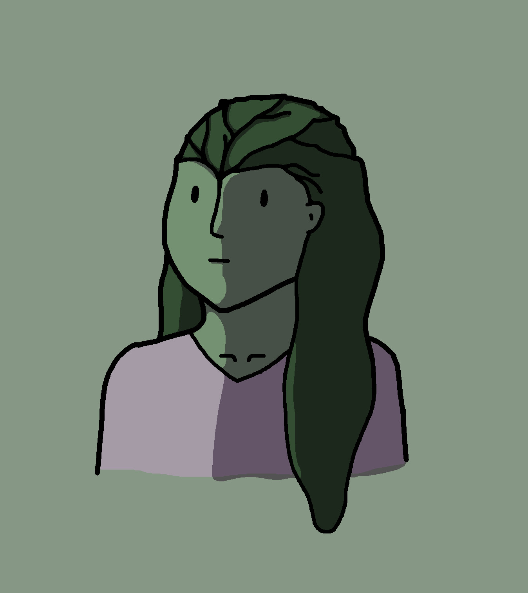
- 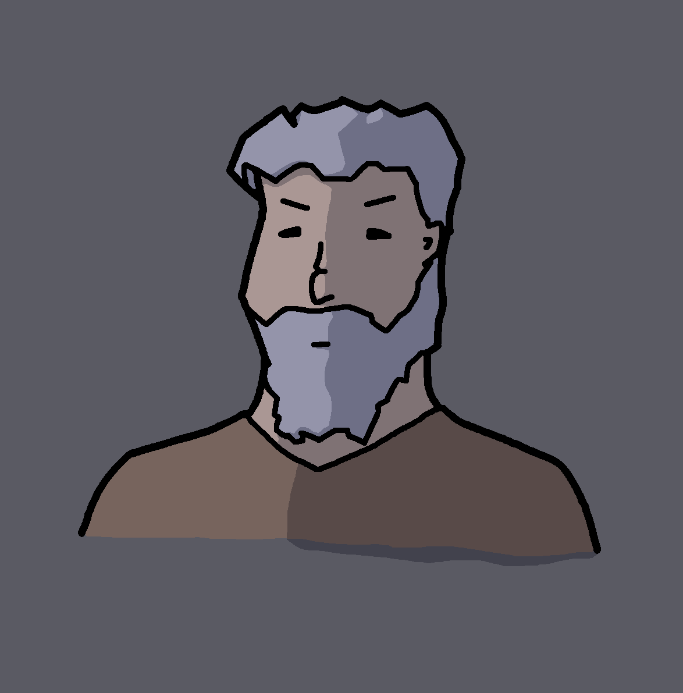
Simple Portraits (Spring 2019)
I made these simple portraits as character concepts for a story I was writing at the time.
-
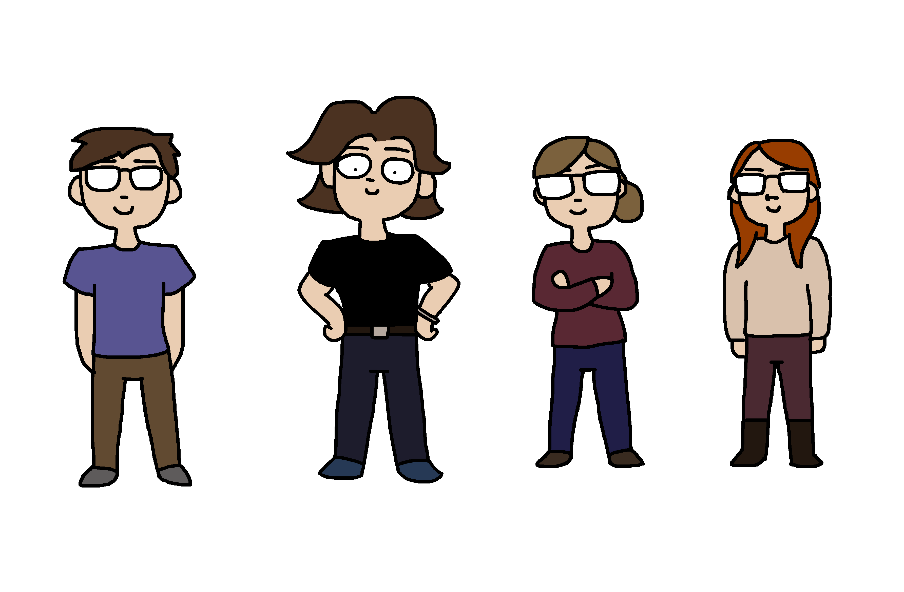
Cartoonified Friends (Fall 2020)
While testing out simplified art styles, I made this group picture of my friends and I.